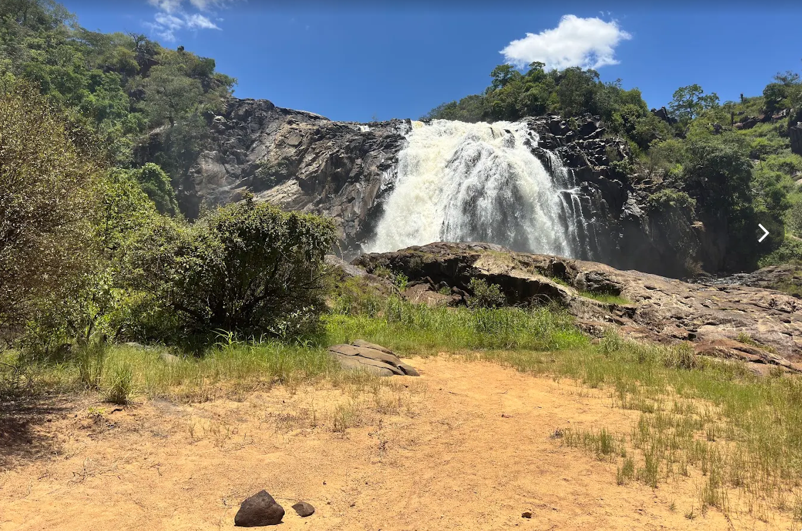
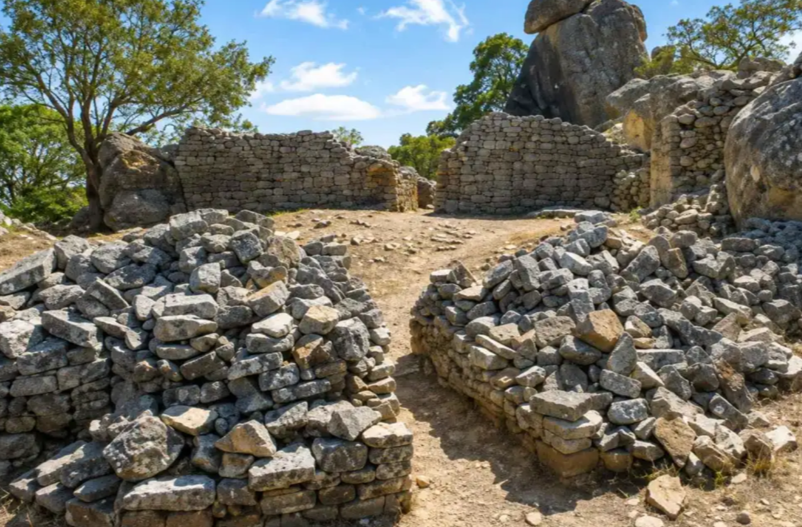

Welcome to Local Community Connect, a platform that promotes local based tourism in Little known areas of Zimbabwe
Our Purpose
We exist to bridge the gap between tourists and local communities, ensuring that tourism benefits both visitors and residents of very little known communities who have a lot to showcase.
Explore Our Destinations
Discover unique places and support local communities across Zimbabwe.
Domboshava
Explore granite hills, ancient rock paintings and local cultural heritage.
Explore granite hills, ancient rock paintings and local cultural heritage.

Wedza
Discover Shona culture, traditional crafts and Makurumure Falls.

Marondera
Experience the vibrant local markets and the hidden Tsindi ruins.
Community Tourism Experiences
Enjoy aunthentic Zimbabwean experiences while supporting local communities.
- Traditional food and cooking
- Cultural dances and music
- Local arts and crafts
- Guided nature walks
- Village tours
- Historical site visits
About Us
Local Community Connect is a platform created to promote community-based tourism in Zimbabwe.
Our aim is to connect tourists with local communities and promote lesser -known tourism destinations.
Our Objectives
- Promote local tourism destinations.
- Support local businesses and communities.
- Preserve zimbabwean culture and heritage.
- Create awareness of community tourism.
Contact Us
Intrested in visiting our local communities? Send us an enquiry.